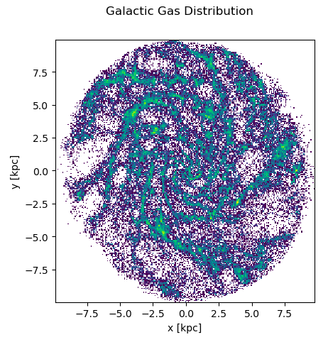
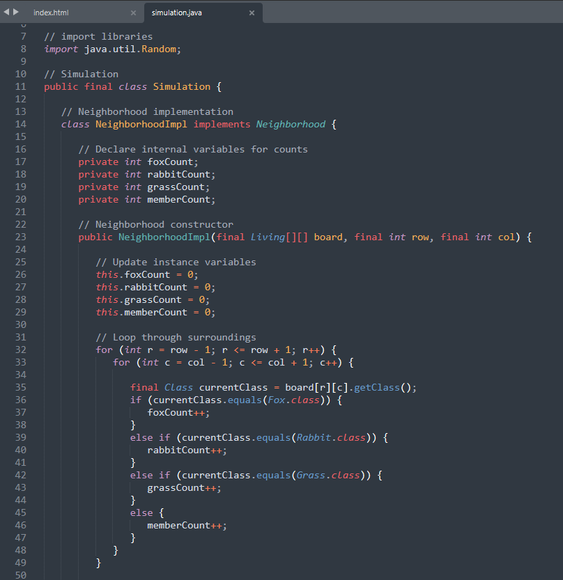

I recently graduated from Florida Tech with a Bachelor's in Astronomy & Astrophysics along with a Minor in Computer Sciences. I'm a French/American dual citizen with experience in both countries and a love for travelling. I’m passionate about esports and strategy games, in particular, Magic: The Gathering and Valorant.

Astrophysics
My first research experience involved converting 2D images of relativistic black hole jets into 3D images, and during this time I began learning the fundamentals of scientific programming and image processing with Python. After this, I moved on to a more personalized project in collaboration with the Flatiron CCA and members of UPenn. This project revolves around satellite-induced dark matter wakes which we explore via simulations and synthetic surveys. I am still working on that project to this day, with a paper on its way soon.

Computer Science
My first experience with computer science happened in high school robotics. I'd love to be poetic about how this experience changed me as a person, but to be quite frank, I hated it. I didn't touch coding again until college, where I took an introductory C++ class and thought to myself, "Hey, this is pretty fun!". Big mistake. I've been falling down the programmer rabit hole ever since.

Esports
Most people have sports they like to watch, like football (the fake american one) or football (the real one). But as a nerdy kid, I've always had esports. In my teens I kept up with various video game championships, and in college I fell in love with Valorant and have been following the competitive scene ever since. When Florida Tech's Esports Center was first established, I had the joy of working as the president of the esports club as we helped put esports on the map. Nowdays, you can find me shoutcasting our schools Valorant games on the Florida Tech Esports twitch page, where I get to ramble on about my knowledge of strategies while having a blast at the same time.
Skillset
Below is a list of some of my skills I've accumulated throughout my academic career.
Python
In astrophysics, Python reigns supreme. This is the language I am most comfortable and experienced in, having used it for both school and reserach.
Java
This is the primary language I used while completing my computer science courses. It's through Java that I learned more rigourous coding concepts, such as recursion and object-oriented programming.
C++
This is the first ever coding language I learned in college, which gave me my first understanding of basic coding concepts such as arithmetic, syntax, and looping.
Numpy
I use the Numpy library everyday when I'm coding in python, as it makes life easy when it comes to multi-dimensional arrays and high-level math functions.
Matplotlib
Similarily to Numpy, this is one of the python libraries I am the most used to using on the daily. Matplotlib allows me to make complex and even dynamic graphs for my work.
Astropy
Astropy is the go-to library when it comes to astronomy, making astronomical calculations and data visualization easy to use. It allows astronomers like myself to analyze vast datasets and perform complex calculations on a large scale.
Pandas
As I've plunged into large scale data, in both astronomy and computer science, Pandas has been an invaluable tool. Through Pandas I am able to clean, filter, and transform large datasets with ease.
Apache Spark
If Pandas doesn't work, Apache Spark is my second line of defense when I have to pull out the big guns. It is designed to distribute data across clusters of machines and can store much larger datasets in a more efficient way.
Keras
AI has always been a facinating topic for me, and I've enjoyed learning about it in an academic setting. My primary tool for building neural networks is Keras, which provides an easy interface to the complex and powerful Tensorflow library.
JupyterHub
Cloud computing is a necessity when it comes to astrophysics coding with data of astronomical size (see what I did there?). JupyterHub has given me a stepping stone into the world of cloud computing from the comfort of my Jupyter notebooks.
Markdown
Pretty code is good code! As a scientist it's my job to make sure everyone can understand my work (no more spaghetti code for you). That's why I use Markdown when I'm working in Jupyter Notebooks.
LaTeX
Ever wondered how scientist make fancy equations and prestine papers? Look no further than LaTeX, the scientific standard for formating text. Overleaf is my personal go-to LaTeX editor when it comes to beautifying papers.